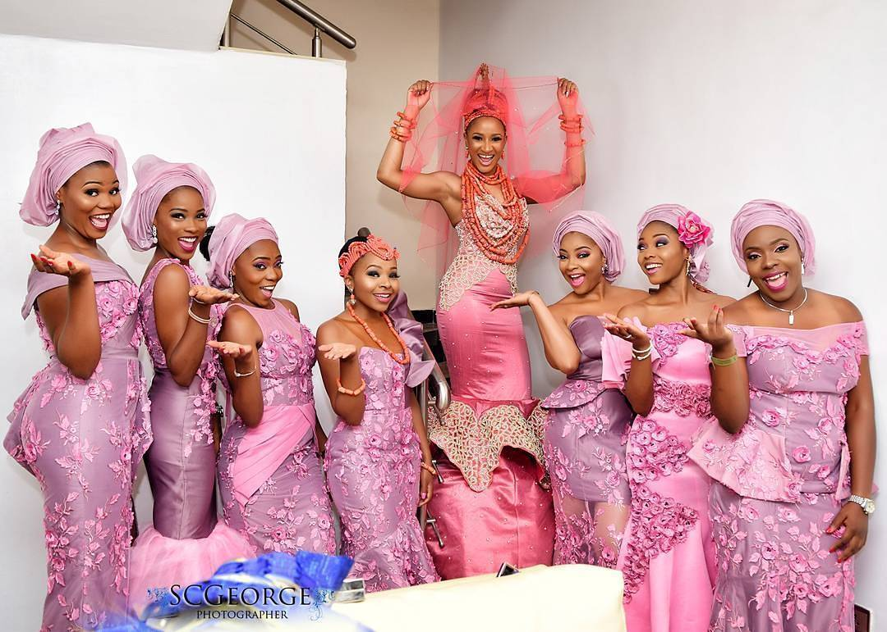
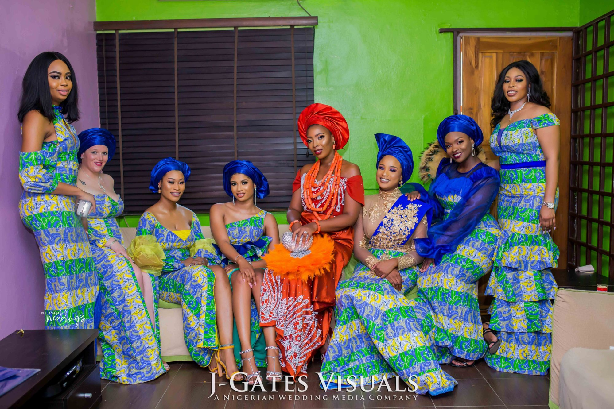
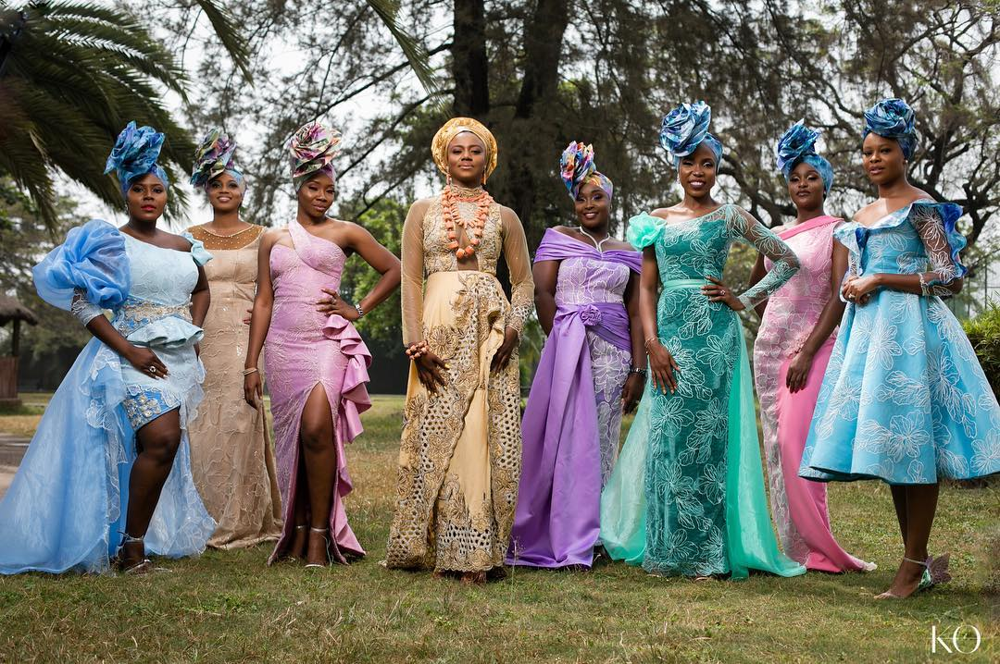
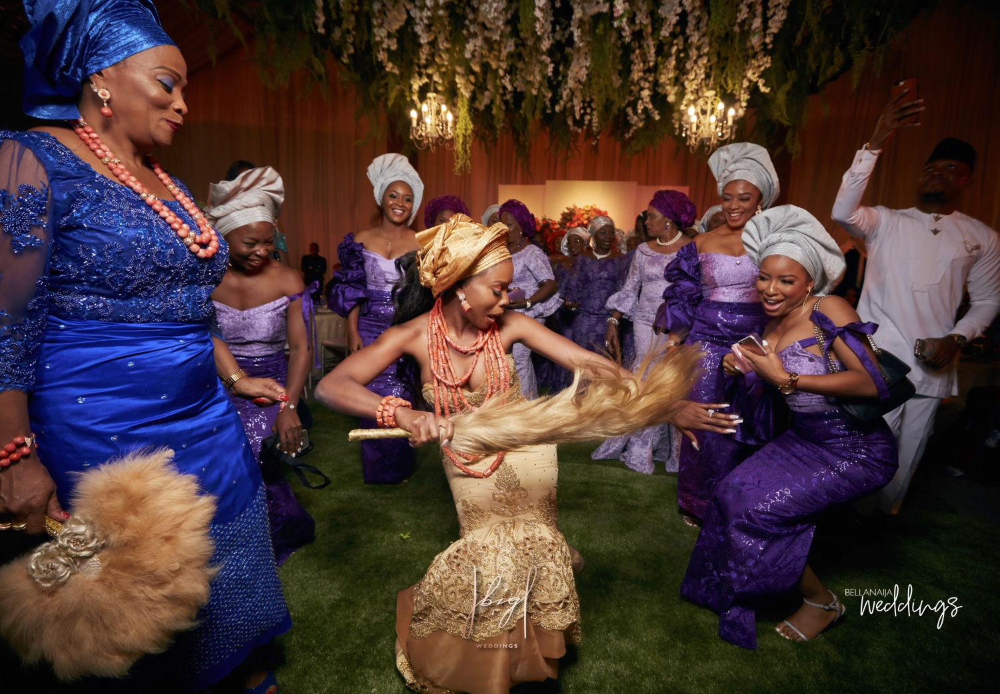

A NIGERIAN TRADITIONAL WEDDING
In Nigeria, a wedding is more than just the celebration of two becoming one. It is also an acknowledgement that the families of both the bride and groom have become one. A Nigerian traditional wedding is a full-on party, full of bright colours, toe-tapping music, and a time to show off the ancient wedding traditions.
There are over 300 tribes in Nigeria, and they each a unique wedding tradition. The most well-known tribes are Yoruba, Hausa, and Igbo, so we’ll focus on the brides attires from any wedding from these tribes. Nigerian couples often have two, or three weddings;the court wedding, a traditional/cultural wedding and a religious wedding. These ceremonies are held days and sometimes weeks apart.
As with many cultures, couples observe tradition long before the wedding day arrives. When it comes to Nigerian wedding traditions, this kicks off with the Introduction Ceremony, where both families come together for perhaps the first time. They exchange gifts with one another and the bride’s family will present the potential groom with a list for what he will need to give to the family in order for them to accept an engagement.
Top 5 to check:
The Gele /Headtie

The Gele is a big colorful headscarf that African ladies and especially Nigerian ladies often wear. It is wrapped like a flower corolla around their head and it gives them a Queen stature. The Gele can be made from fabrics like Aso –Oke (African silk), Brocades, Hayes and the list goes on.
Corals / Beads
Fabric (Aso-oke/Lace/Ankara..)


Friends of the Bride
   In Nigerian culture, families and friends often wear similar fabric at cultural celebrations to show unity and support. At traditional weddings, the women whom the bride chooses to wear aso‐ebi can be thought of as the equivalent of a huge group of bridesmaids.
If you got some inspiration or just lack of it, check out our DIY section. Montoya Mayo helps you make an Ankara half circle maxi length skirt with pockets.